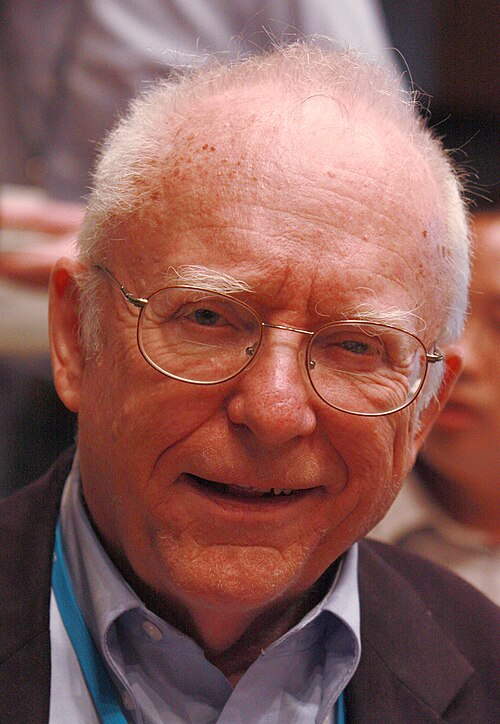

Velocidad de la luz
Exacta Símbolo: c
Valor exacto por definición o por combinación de constantes exactas. Los puntos suspensivos indican cifras decimales no mostradas.
Personas e ideas
Hito histórico: 1676 · finitud de la velocidad; 1865 · teoría electromagnética
Ole Rømer detectó el retraso de los eclipses de Ío (1676); Hippolyte Fizeau realizó una medición terrestre (1849). James Clerk Maxwell identificó la luz con ondas electromagnéticas. No hay un descubridor único del valor moderno.

Los retratos anteriores a la fotografía son pinturas o grabados; los créditos identifican su procedencia. La fecha del hito no es necesariamente la de la primera medición precisa.
Dónde aparece
Si su valor cambiara
No existe un intervalo universal de colapso para esta constante dimensional por separado. Debe fijarse qué razones adimensionales cambian y qué parámetros permanecen constantes. A velocidad material v fija, aumentar c reduce v/c y los efectos relativistas; la comparación tiene sentido sólo dentro del modelo y sistema de unidades especificados.
Frecuencia y longitud de onda de un láser estabilizado
Año: 1972
Autores: K. M. Evenson, J. S. Wells, F. R. Petersen, B. L. Danielson, G. W. Day, R. L. Barger y J. L. Hall (NBS).

Resultado publicado
c = 299 792 456,2 m s⁻¹
Error o incertidumbre: ± 1,1 m s⁻¹; incertidumbre publicada, anterior a la definición del metro de 1983.
Cómo se realizó
- Estabilizar un láser de helio-neón con una transición del metano.
- Comparar su frecuencia con el patrón de tiempo mediante una cadena de síntesis.
- Medir la longitud de onda por interferometría respecto al patrón de longitud de criptón.
- Multiplicar c = λν y evaluar las incertidumbres de ambos patrones.
Fuentes de la ficha
- Publicación del experimento o fuente histórica
- Historia y medida
- CODATA 2022 · valores, ajuste y correlaciones
- Sistema Internacional · definiciones
Consulta editorial: 28 de septiembre de 2026. El experimento elegido es representativo; no se presenta como la única medición ni necesariamente como la más reciente.